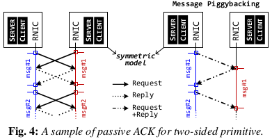

hybrid-osdi2018
[Paper] Deconstructing RDMA-enabled Distributed Transactions : Hybrid is Better !
[摘要]
目前大家在激烈地争论哪一种RDMA原语对分布式事务是最优的。这种争论引出了许多基于一种RDMA原语的优化并证明比另一种原语有更好的性能。
在这篇文章里，我们使用具有代表性的OLTP负载对不同的RDMA原语结合不同的优化进行了系统性的比较。具体来说，我们首先在一个单个优化的执行框架上使用已有的和我们新的优化措施来实现和比较不同的RDMA原语。这让我们可以观察不同RDMA原语的性能特征。然后，我们通过使用来自TPC-C, SmallBank和TPC-E的多种事务，逐阶段地对比不同RDMA原语的方法来研究乐观并发控制的实现。我们的结果表明没有单一的原语能够在所有的阶段都比其他原语的性能要好。在同样的代码基础上，我们对之前的设计进一步做了一个端到端的比较，发现没有一个是最优的。
基于上面的研究，我们构建了DrTM+H，一个新型混合分布式事务系统，它在每个事务执行阶段都选择最优的RDMA原语。
[介绍]
带有序列化和高可用的分布式事务为编程人员提供了一个强有力的抽象：单个机器以强一致性的方式执行事务并且从来不会失败。虽然分布式事务通常看起来很慢，但是快速网络的流行如RDMA，已经将分布式事务的性能提高了几个数量级。RDMA网卡提供高带宽，极低的数据包通信延迟(two-sided primitive)和卸载技术(one-sided primitive)：网卡可以绕过内核和远端的CPU来直接访问远端机器的内存。
最近，大家在争论哪一种RDMA原语更适合分布式事务。One-sided 原语(READ/WRITE/ATOMIC)提供更高的性能和更低的CPU利用率。但另一方面，two-sided(特指UD)原语简化应用编程并且更少被硬件限制，如RDMA网卡的缓存能力。
基于之前的研究，系统设计者很难为事务选择正确的原语。大多数对基于RDMA的事务的工作都是提出一个重新构建的新系统，并使用其他的代码库和之前的工作进行比较。一些工作只使用micro-benchmark来比较不同原语或设计的性能。这使得他们的结果很难解释：硬件配置或软件栈的区别影响观察到的性能。不仅如此，不同的RDMA原语也许会显著地影响整体的性能。
目前在数据库领域已经有一些比较不同事务系统的有价值的研究。Harding等人使用单个框架对不同的事务协议在不同的负载下表现如何进行了深入的研究。但是，对于一个特定的协议，可能存在许多不同的实现，它们之间的性能差异也可能很大，尤其是在使用新硬件特性时如RDMA。
在这篇文章中，我们对不同的RDMA原语和设计如何影响分布式事务的性能做了第一个系统性研究。与之前大多数研究比较不同的整个系统不同，我们在单一的执行框架中比较不同设计。目标是为使用RDMA优化分布式事务和其他基于RDMA的系统提供一份指南。总结而言，这篇文章的贡献是：
- 使用一个精心调优的RDMA执行框架来对原语进行比较
- 在同样的round trips下，one-sided原语要比two-sided原语性能好
- 在大集群和小负载下，two-sided原语有更好的可扩展性
- 当接收ACK从关键路径上移除时，two-sided原语可以比one-sided原语更快
- 逐阶段对事务(OCC,乐观并发控制)执行进行评估
- 在执行和验证阶段使用混合原语
- 在提交阶段使用two-sided原语
- 在日志阶段使用one-sided原语
- 对于只读事务，在读阶段使用混合原语，在验证阶段使用one-sided原语
[原语]
[创建QP]
我们为每个线程使用一个专用的context来创建QP，否则会在驱动内部甚至每个线程使用自己的QP时产生虚假同步。根源问题是：每个QP使用一个预先映射的缓存来发送MMIO来投递请求，但是这个缓存可能会被共享。根据Mellanox驱动的实现，这个缓存是从一个context中分配的，而每个context的缓存有限。例如，mlx4驱动使用7个专用缓存和1个共享缓存。这意味着如果这个context用来创建超过8个QPs时，多余的QP就不得不共享同样的缓存。此时即使每个线程使用独占的QP，在增加线程数量时，这个共享context的吞吐量会降到63%。这个开销来自对共享MMIO缓存的同步访问。
[优化和被动ACK]
[协程]
使用协程来实现流水线式发送请求
[未完成的请求]
读写并行，不需要等到上一个请求完成再发起下一个请求
[Doorbell批处理]
有许多方法向网卡发起多个请求。通用的方法是为不同的请求发起独立的MMIOs。另一方面，doorbell批处理只写一次doorbell来告诉网卡使用DMA来取多个请求。MMIO通常会耗费几百个CPU周期，代价很高。因此，doorbell批处理可以降低发送端的CPU开销，更好地利用PCIe的带宽，因为对于每个batch，它只需要一次MMIO来写doorbell。唯一的限制是只有来自同一个QP的请求可以被批处理。
[被动ACK]

如果请求的完成(ACK)能够从事务执行的关键路径上移除，那么性能可以得到进一步改善。我们通过被动地确认请求来实现这个。对于one-sided原语，此请求的完成可以通过检查下一个请求的完成而得知。这可以节省网卡带宽。对于two-sided原语，在对称环境下，请求的完成可以通过对方的回复而得知。在事务执行中，提交阶段中的写回请求可以被动ACK。